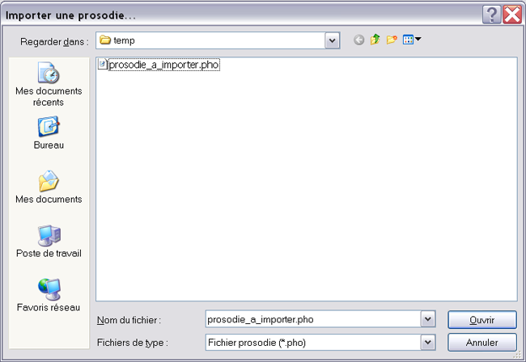
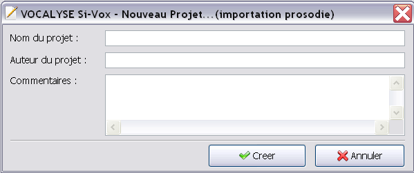

Pour importer une prosodie (.pho), il faut cliquer sur Fichier > Importer une prosodie...
Le logicel vous demande alors le fichier de prosodie/phonemes que vous voulez importer (extension .pho)

En cliquant sur Ouvrir, le logiciel vous demandera les informations concernant le nouveau projet d'importation.

Si vous cliquez sur Annuler, rien ne s'effectuera. Si vous cliquez sur Créer, le logiciel créra un nouveau projet en important la prosodie sélectionné